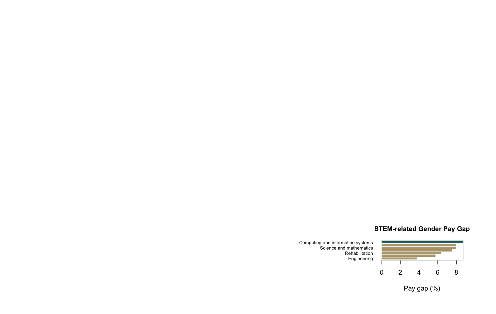

Data Analyst Portfolio Project
Australian Graduate Employment Outcomes Analysis
An end-to-end analysis of QILT GOS-L public graduate outcomes data, focused on Computing and Information Systems employment, salary, salary growth, and gender pay gap outcomes.

Key CIS Metrics
Medium-term full-time employment
91.0%
Medium-term overall employment
92.0%
Medium-term median salary
AUD 100k
CIS gender pay gap
8.7%
What This Project Demonstrates
- Extracting structured data from a public multi-sheet Excel workbook with Python.
- Cleaning, transforming, modelling, and visualising graduate outcomes data with R.
- Writing SQL queries and loading cleaned data into SQLite for analysis.
- Building a reproducible portfolio report, dashboard preview, documentation, and interview notes.
Project Links
Final HTML ReportFull analysis and visual findings
Python Notebookpandas and matplotlib analysis version
SQL QueriesKPI, ranking, and gap analysis queries
Data DictionaryField definitions for cleaned datasets
Data Quality ReportChecks for ranges, missingness, and duplicates
Interview Talking PointsHow to explain this project in interviews